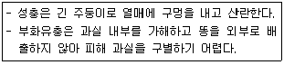

종자기사 (2014-08-17 기출문제)
1과목: 종자생산학
1. 보리종자의 단백질함량에 미치는 환경의 영향을 옳게 설명한 것은?
- 종자의 단백질함량은 종자발달의 초기에 주로 축적된다.
- 종자의 단백질함량은 종자발달의 후기에 주로 축적된다.
- 종실의 발달기간에 환경조건이 좋으면 단백질 농도가 증가한다.
- 종실의 발달기간에 환경조건이 나쁘면 단백질 농도가 증가한다.
(정답률: 44%)

2. 종자휴면에 대한 설명으로 틀린 것은?
- 배 휴면을 하는 종자의 휴면타파를 위하여 저온처리 할 때 0~6℃의 온도가 적당하다.
- gibberellin은 cytokinin과 ABA를 함께 사용했을 때 ABA의 억제작용을 상쇄하는 제3의 호르몬 역할을 한다.
- 수확전 종자의 발달과 성숙기간동안의 환경요인들은 배의 휴면기간에 영향을 끼친다.
- 경실종자는 자연조건과 유사한 휴면타파방법으로서 고온처리법과 변온처리법이 있다.
(정답률: 72%)
3. 발아검사 결과 재시험을 해야 할 경우에 해당하지 않는 것은?
- 4반복의 반복 간 차이가 최대 허용범위를 벗어났을 때
- 휴면종자가 많았을 때
- 발아세가 낮았을 때
- 발아상(床)에 1차감염이 심했을 때
(정답률: 80%)
4. 종묘회사에서 해외채종을 하게 되는 가장 주된 이유는?
- 채종포 격리가 쉽다.
- 병충해 감염의 우려가 적다.
- 기후조건이 채종에 유리하다.
- 원산지에서의 모본선발이 유리하다.
(정답률: 71%)
5. 중복수정에서 배유가 형성되는 것은?
- 정핵과 극핵
- 정핵과 난핵
- 화분관핵과 정핵
- 극핵과 화분관핵
(정답률: 77%)
6. 여름철 재배되는 시금치 품종의 채종적지로 알맞은 곳은?
- 해발이 높은 고냉지대
- 강우가 적은 건조지대
- 장일조건이 되는 고위도지대
- 고온조건인 적도에 가까운 지대
(정답률: 72%)
7. 종자검사시료의 추출방법으로 적합하지 않은 것은?
- 균분기 이용
- 표본방법
- 무작위컵방법
- 균분격자방법
(정답률: 45%)
8. 옥신 1M을 만들려면 물 1L에 얼마의 옥신이 필요한가? (단, 옥신의 분자량은 175.15로 한다.)
- 1.7518g
- 17.518g
- 175.18g
- 1751.8g
(정답률: 69%)
9. 배추나 양배추에서 뇌수분을 하는 궁극적인 목적은?
- 종자휴면을 타파할 때
- 자가불화합성 양친의 자식계통을 얻을 때
- F1교잡종자를 채종할 때
- 웅성불임계통을 유지할 때
(정답률: 73%)
10. 채소작물 채종에서 웅성불임 개체를 찾으려고 노력하는 이유는?
- 재배하기 쉽다.
- 병충해에 강하다.
- 과실당 채종량을 높일 수 있다.
- 인공교배작업을 생략할 수 있다.
(정답률: 68%)
11. 오이의 암꽃착생비율을 증가시키는 식물생장조절물질은?
- GA
- CPA
- ethylene
- cytokinin
(정답률: 61%)
12. 종자 훈증제의 구비조건이 되지 못하는 것은?
- 공기보다 가벼워야한다.
- 불연성이고 비폭발성이어야 한다.
- 종자의 활력에 영향을 주지 말아야 한다.
- 가격이 싸고 사용할 때 증발이 쉬워야 한다.
(정답률: 73%)
13. 작물이 영양생장에서 생식생장으로 전환되는 시점은?
- 종자발아기
- 화아분화기
- 감수분열기
- 개화기
(정답률: 68%)
14. 주로 자가불화합성을 활용한 채종체계가 확립된 대표적 작물은?
- 박과 작물
- 콩과 작물
- 가지과 작물
- 배추과 작물
(정답률: 75%)
15. 작물병의 진단요소가 아닌 것은?
- 병원체
- 표징
- 병환
- 병징
(정답률: 58%)
16. 상추종자를 채종한 후 상온하에서 휴면타파를 위한 저장방법은?
- 건조 저장
- 다습 저장
- 고온 저장
- 저온 저장
(정답률: 40%)
17. 종자저장을 위해 사용되는 건조제로 적당하지 않은 것은?
- SO2
- H2SO4
- HNO3
- CaO
(정답률: 47%)
18. 경실종자의 휴면타파 방법으로 효과가 가장 낮은 것은?
- 질산칼륨처리
- 끓는 물에 담금
- 산으로 상처내기
- 종피에 기계적 상처내기
(정답률: 41%)
19. 농약과 색소를 혼합하여 접착제(polymer)로 종자표면에 얇게 코팅처리를 하는 것은?
- 종자펠릿
- 필름코팅
- 장환종자
- 피막종자
(정답률: 70%)
20. 생식세포의 접합에 의하여 생성된 배유의 염색체 조성은?
- 1n
- 2n
- 3n
- 4n
(정답률: 74%)
2과목: 식물육종학
21. 유전자 재조합과 관계없이 어떤 원인에 의하여 유전물질 자체에 변화가 일어나 발생되는 변이는?
- 양적변이
- 교배변이
- 방황변이
- 돌연변이
(정답률: 75%)
22. 순계분리(純系分離) 육종법에 대한 설명으로 틀린 것은?
- 타식성 작물에 적용되는 육종법으로 내병성 작물 육종에 많이 적용되는 육종법이다.
- 자연 상태에서 잡박한 여러 순계가 혼합되어 있을 때에 효과가 있다.
- 동일한 순계 내에서 자연돌연변이가 일어나지 아니할 때는 효과가 없다.
- Johannsen의 순계설에 이론적 근거를 두었다.
(정답률: 66%)
23. 유전적 평형집단에서 A 유전자의 빈도를 0.7, a 유전자의 빈도를 0.3이라고 했을 때 집단 내에서 AA, Aa, aa의 유전자형의 빈도는?
- AA: 0.7, Aa: 0.21, aa: 0.3
- AA: 0.49, Aa: 0.42, aa: 0.09
- AA: 0.09, Aa: 0.42, aa: 0.49
- AA: 0.7, Aa: 0, aa: 0.3
(정답률: 72%)
24. 내병성 육종과정에 대한 설명으로 틀린 것은?
- 대상되는 병이 많이 발생하는 계절에 선발한다.
- 튼튼하게 키우기 위하여 농약살포를 충분히 한다.
- 대상되는 병에 대해 제일 약한 품종을 일정한 간격으로 심는다.
- 병원균을 인위적으로 살포하여 준다.
(정답률: 77%)
25. 식물조직배양 기술 중 배주(胚珠)배양이나 배(胚)배양은 주로 어떤 경우에 적용하는가?
- 품질이 우수한 품종을 육성코자 할 때
- 여교배에 의하여 동질 유전자계통을 육성코자 할 때
- 종속간 교배에 의한 유용한 유전자 도입을 목표로 할 때
- 수량이 많은 합성품종을 육성코자 할 때
(정답률: 57%)
26. 종속간 교잡육종법의 장점은?
- 교잡을 하기 쉽다.
- 종자의 임실율이 높아진다.
- 변이의 폭을 확대할 수 있다.
- 적은 수의 유전자를 집적하는 방법이다.
(정답률: 62%)
27. 토마토 과실 하나 안에 종자가 500개 생겼을 때에 그 생성 과정을 바르게 설명한 것은?
- 한 개의 난세포와 한 개의 화분에 의해 생긴 한 개의 접합자가 분열하여 500개의 종자를 생산하였다.
- 한개의 난세포가 500개의 화분에 의해 수정되어 종자로 발육하였다.
- 500개의 난세포가 하나의 화분에 의해 수정되어 종자로 발육하였다.
- 500개의 난세포가 각각 다른 화분에 의해 수정되어 종자로 발육하였다.
(정답률: 62%)
28. 다음 중 일대잡종을 가장 많이 이용하는 작물은?
- 벼
- 옥수수
- 밀
- 콩
(정답률: 58%)
29. 배우체형 자가불화합성과 포자체형 자가불화합성의 차이를 옳게 설명한 것은?
- 불화합성이 배우체형은 화주 내에서, 그리고 포자체형은 주두의 표면에서 발현된다.
- 불화합성 관련 대립유전자 간에 배우체형은 우열관계, 포자체형은 공우성 관계가 성립된다.
- 주두 표면의 특성 비교 시 배우체형 식물의 주두는 건성이고, 포자체형 식물의 주두는 습성(점성)이다.
- 불화합성에 관련된 유전자가 배우체형은 한 쌍이고, 포자체형은 여러 쌍이다.
(정답률: 61%)
30. 육성계통의 생산력 검정을 위한 포장시험에서 주의해야 할 사항으로 가장 거리가 먼 것은?
- 토양의 균일성 유지
- 품종 및 계통의 임의 배치
- 반복실험
- 일장처리
(정답률: 59%)
31. 유전자(gene)를 가장 바르게 표현한 것은?
- plasmagene
- 핵산과 단백질로 구성된 물질
- 질소를 가진 염기 3개로 구성된 RNA절편
- 단백질 합성을 위한 완전한 염기코드를 가진 DNA절편
(정답률: 65%)
32. 품종퇴화를 방지하고 품종의 특성을 유지하는 방법으로 틀린 것은?
- 개체집단선발법
- 계통집단선발법
- 방임 수분
- 격리재배
(정답률: 78%)
33. 주로 타가수정 작물에 적용하는 육종방법으로 개체 또는 계통의 집단을 대상으로 선발을 거듭하는 방법은?
- 계통분리법
- 인공교배법
- 도입육종법
- 단위생식 이용법
(정답률: 81%)
34. 원연종간의 유전질 조합방법으로 체세포를 이용하는 것은?
- 복교잡
- 원형질체 융합
- 3계교잡
- 배배양
(정답률: 60%)
35. 벼 농사의 녹색 혁명과 관련이 있는 기관은?
- USDA
- CIMMYT
- IRRI
- AVRDC
(정답률: 80%)
36. 육종을 위한 교배친 선정시 고려할 사항으로 틀린 것은?
- 교배친으로 사용한 실적을 참고, 우량품종을 육성한 실적이 많은 계통을 교배친으로 사용한다.
- 목표형질 이외에 자방친과 화분친의 유전적 조성이 다를수록 좋다.
- 대상지역의 주요품종과 주요품종의 결점을 보완할 수 있는 품종을 교배친으로 선정하는 것이 바람직하다.
- 여러 지역에서 수집한 자원은 같은 장소에서 특성을 조사해야하며, 양적형질은 여러 해 반복해서 조사해야한다.
(정답률: 75%)
37. 장벽수정(hercogamy)의 대표적 식물은?
- 양파
- 복숭아
- 붓꽃
- 국화
(정답률: 64%)
38. 냉이의 삭과형에서 부채꼴 × 창꼴의 F1은 부채꼴이고, F2에서는 부채꼴과 창꼴이 15:1로 분리된다면, 이러한 유전인자는?
- 보족유전자
- 억제유전자
- 중복유전자
- 변경유전자
(정답률: 72%)
39. 자식성 작물의 변이집단에서 개체선발 효과를 알기 위한 척도가 되는 것은?
- 유전력
- 표현형 지배가
- 잡종강세 현상
- 자식약세 현상
(정답률: 61%)
40. 자식열세 현상의 설명으로 옳은 것은?
- 자가수정 작물이나 타가수정 작물 모두에서 나타난다.
- 열성유전자의 동형화에 의하여 불량형질이 나타난다.
- 자식열세 현상은 세대를 거듭하여도 거의 일정한 비율로 나타난다.
- 자식열세 현상은 자식 초기에는 적지만 자식 후기에는 크다.
(정답률: 42%)
3과목: 재배원론
41. 감자나 고구마의 파종기나 이식기가 늦어졌을 때 T/R율이 커지는 이유로 옳은 것은?
- 탄수화물의 축적이 지하부에서 더 빨리 진행되기 때문이다.
- 지하부의 중량감소가 지상부의 중량감소보다 커지기 때문이다.
- 지하부의 생장보다 지상부의 생장이 더 크게 저해되기 때문이다.
- 지하부에 질소집적이 많아지고 단백질 합성이 왕성해지기 때문이다.
(정답률: 64%)
42. 작물의 냉해에 대한 설명으로 틀린 것은?
- 병해형 쟁해는 단백질의 합성이 증가되어 체내에 암모니아 축적이 적어지는 형의 냉해이다.
- 혼합형 냉해는 지연형 냉해, 장해형 냉해, 병해형 냉해가 복합적으로 발생하여 수량이 급감하는 형의 냉해이다.
- 장해형 냉해는 유수형성기부터 개화기까지, 특히 생식세포의 감수분열기에 냉온으로 불임현상이 나타나는 형의 냉해이다.
- 지연형 냉해는 생육초기부터 출수기에 걸쳐서 여러시기에 냉온을 만나서 출수가 지연되고, 이에 따라 등숙이 지연되어 후기의 저온으로 인하여 등숙 불량을 초래하는 냉해이다.
(정답률: 61%)
43. 우량종자가 갖추어야 할 조건으로 틀린 것은?
- 발아력이 좋아야 한다.
- 초기신장성이 좋아야 한다.
- 유전적으로 다양해야 한다.
- 병, 해충에 감염되지 않아야 한다.
(정답률: 60%)
44. 목초의 하고현상(夏枯現象)에 대한 설명으로 옳은 것은?
- 일년생 남방형 목초가 여름철에 많이 발생한다.
- 다년생 북방형 목초가 여름철에 많이 발생한다.
- 여름철의 고온, 다습한 조건에서 많이 발생한다.
- 월동목초가 단일(短日) 조건에서 많이 발생한다.
(정답률: 57%)
45. 나팔꽃 대목에 고구마 순을 접목하여 개화를 유도하는 이론적 근거로 가장 적합한 것은?
- C/N율
- G-D균형
- L/W율
- T/R율
(정답률: 47%)
46. 1년생 가지에서 결실하는 과수로만 나열된 것은?
- 복숭아-감
- 사과-밤
- 감-밤
- 복숭아-사과
(정답률: 59%)
47. 작물의 내열성에 대한 설명으로 옳은 것은?
- 어린 잎이 늙은 잎보다 내열성이 크다.
- 세포내의 점성이 높으면 내열성이 증대한다.
- 세포내의 유리수가 많으면 내열성이 증대된다.
- 세포내의 단백질 함량이 많으면 내열성이 감소한다.
(정답률: 46%)
48. 비선택성의 파종 전 처리 제초제로서 제초효과가 높고 값이 싸 널리 이용되었으나, 음독 농약으로 사회적 물의를 일으키는 등 문제됨에 따라 최근 사용금지된 것은?
- simazine
- paraquat
- alachlor
- bentazon
(정답률: 63%)
49. 기지의 원인이 되는 토양전염병이 아닌 것은?
- 완두 모잘록병
- 인삼 뿌리썩음병
- 사과적진병
- 토마토 풋마름병
(정답률: 56%)
50. 식물의 생장을 억제하는 물질이 아닌 것은?
- B-nine(B-9)
- CCC(Cycocel)
- MH(maleic hydrazide)
- NAA(1-naphthaleneacetic acid)
(정답률: 58%)
51. 토양수분과 작물 생육과의 관계를 옳게 설명한 것은?
- 포장용수량의 pF는 2.5~2.7 정도이다.
- 작물생육에 적합한 수분함량은 pF 3.0~4.7 종도이다.
- 작물이 주로 이용하는 수분은 중력수와 토양입자 흡습수이다.
- 초기위조점에 달한 식물은 수분을 공급해도 살아나기 어렵다.
(정답률: 48%)
52. 바람이 작물에 미치는 영향을 설명한 것으로 옳은 것은?
- 냉풍은 작물체온을 저하시키나 냉해를 유발시키지 않는다.
- 강한바람으로 기공이 열려 이산화탄소의 흡수가 증가되므로 광합성을 조장한다.
- 강한 바람에 의해서 상처가 나면 호흡이 증대하여 체내양분의 소모가 증대한다.
- 일반적으로 벼의 백수현상은 습도 60%에서는 풍속 10m/s에서도 발생하지 않는다.
(정답률: 66%)
53. 미숙한 상태의 종자에 이 처리를 하게 되면 배가 더 성숙하여 실제 파종 시 발아율이 향상된다. 즉, 저장중의 종자를 일시적으로 약간의 수분을 흡수하게 했다가 다시 건조하여 종자를 보관하는 종자처리 방법은?
- 침종(seed soaking)
- 펠렛팅(pelleting)
- 프라이밍(priming)
- 지베렐린(gibberellin) 처리
(정답률: 63%)
54. 접목 육묘 시 활착률을 높이기 위해 필요한 검토사항으로 적절하지 않은 것은?
- 접목시 가능한 상처 면적을 줄이기 위해 절단면을 작게한다.
- 대목과 접수의 접목친화성이 낮으면 대승현상이나 대부현상 등이 발생하여 생육이 왕성한 시기에 접목부위를 통한 양수분의 이동이 적어져 말라죽는다.
- 접목시기는 대부분 겨울철로 저온과 낮은 상대습도로 인해 활착이 늦어지고 활착률이 떨어지므로 접목상 내는 저온이 되지 않도록 하고 가습장치를 이용하여 상대습도가 지나치게 낮지 않도록 해야한다.
- 이병주 접목에 따른 연쇄적인 병 발생 방지를 위해 접목도구의 소독문제를 고려해야한다.
(정답률: 61%)
55. 습해의 대책으로 적합하지 않은 것은?
- 배수시설을 설치한다.
- 밭에서는 휴립휴파 재배를 한다.
- 과산화석회(CaO2)를 종자에 분의하여 파종한다.
- 미숙 유기물과 황산근 비료를 사용하여 입단형성을 촉진시킨다.
(정답률: 60%)
56. Oryza sativa L 은 어떤 작물의 학명인가?
- 밀
- 토마토
- 벼
- 담배
(정답률: 76%)
57. 요수량에 대한 설명으로 틀린 것은?
- 건물생산의 속도가 낮은 생육초기의 요수량이 크다.
- 토양수분의 과다 및 과소, 척박한 토양 등의 환경 조건은 요수량을 크게 한다.
- 수수·기장·옥수수 등이 크고, 알팔파·클로버 등이 적다.
- 광 부족, 많은 바람, 공기습도의 저하, 저온과 고온은 요수량을 크게한다.
(정답률: 66%)
58. 엽록소 형성에 가장 효과적인 광파장은?
- 황색광 영역
- 자외선과 자색광 영역
- 녹색광 영역
- 청색광과 적색광 영역
(정답률: 70%)
59. 스위스의 식물학자로 산야에서 채취한 과실을 먹고 던져둔 종자에서 똑같은 식물이 자라는 것을 보고 파종이라는 관념을 배웠을 것으로 추정한 사람은?
- A.P. De Candolle
- G. Allen
- H.J.E. Peake
- P. Dettweiler
(정답률: 49%)
60. 작물과 온도와의 관계를 바르게 설명한 것은?
- 고등식물의 열사 온도는 대략 80~90℃ 이다.
- 밤이나 그늘의 작물체온은 기온보다 높아지기 쉽다.
- 고구마는 변온보다 항온조건에서 덩이뿌리의 발달이 촉진된다.
- 혹서기에 토양온도는 기온보다 10℃ 이상 높아질 수 있다.
(정답률: 48%)
4과목: 식물보호학
61. 보호살균제에 해당하는 것은?
- 석회보르도액
- 페나리몰 유제
- 스트렙토마이신 수화제
- 가스가마이신 액제
(정답률: 75%)
62. 우리나라 맥류포장의 동계 1년생에 해당되는 잡초는?
- 애기수영
- 왕바랭이
- 광대나물
- 민들레
(정답률: 46%)
63. 약제가 해충의 먹이와 함께 소화관으로 들어가서 해충을 죽일 수 있는 것은?
- 독제
- 접촉제
- 훈증제
- 기피제
(정답률: 65%)
64. 사과나무 부란병의 증세에 대한 설명으로 옳은 것은?
- 기주교대를 보이는 병이다.
- 균사형태로 전염되는 병이다.
- 잡초에 병원체가 월동하며, 토양으로 전염되는 병이다.
- 주로 빗물에 의해 전파되며, 발병부위에 알콜냄새가 난다.
(정답률: 71%)
65. 농약제조용 증량제의 특성에 대한 설명으로 틀린 것은?
- 증량제 입자의 크기는 분제의 분산성, 비산성, 부착성에 영향을 미친다.
- 증량제의 강도가 너무 강하면 농약 살포 때 살분기의 마모가 심하다.
- 증량제의 수분함량 및 흡습성이 높으면 살포된 농약의 응집력이 증대되어 분산성이 향상된다.
- 농약의 저장중 증량제에 의해 유효성분이 분해되지 않고 안정성이 유지되어야 한다.
(정답률: 69%)
66. 해충의 종합적방제를 위한 방안으로 해충의 발생밀도조사 방법 중 주광성을 이용한 해충의 발생시기, 발생량, 발생장소 등을 조사하기 위한 방법은?
- 페로몬 조사법
- 수반조사법
- 예찰등 조사법
- 포충망 조사법
(정답률: 74%)
67. 잡초의 생태적 방제법 중 작물의 경합력 증진을 위한 재배조치로 경합특성 이용법에 해당하는 것은?
- 윤작, 재식밀도
- 피복, 예취
- 시비, 열처리
- 경운, 침수처리
(정답률: 72%)
68. 다알리아, 튤립, 글라디올러스 등에 발생하는 바이러스병의 가장 중요한 1차 전염원은?
- 상토
- 곤충
- 양액
- 구근
(정답률: 73%)
69. 가장 바람직한 작물병의 방제방법은?
- 화학약제의 충분한 사용
- 저항성 품종의 재배
- 질소질 비료의 충분한 시비
- 포장 청결
(정답률: 73%)
70. 완전변태 곤충의 유리한 점은?
- 유충과 성충의 형태가 거의 같아서 분류에 용이하다.
- 유충과 성충의 먹이와 서식처의 경합이 생기지 않는다.
- 유충과 성충이 먹이가 같으므로 먹이 찾는데 유리하다.
- 유충과 성충이 같은 곳에 살 수 있어서 서식 공간 확보에 유리하다.
(정답률: 76%)
71. 특정 품종의 기주식물을 침해할 뿐, 다른 품종은 침해하지 못하는 집단은?
- 클론
- 품종
- 레이스
- 스트레인
(정답률: 78%)
72. 노균병, 역병을 일으키는 난균류(Oomycetes)의 특징으로 옳은 것은?
- 격벽이 있는 긴 균사체이다.
- 일반적으로 분생포자와 후막포자를 형성한다.
- 장정기와 장란기의 결합으로 유주포자를 생성한다.
- 균사체는 주로 글루칸과 셀룰로스로 이루어져 있다.
(정답률: 47%)
73. 적절한 해충방제방법으로 볼 수 없는 것은?
- 예찰을 통해 적기에 방제한다.
- 해충밀도가 zero상태가 될 때까지 주기적으로 농약을 살포함으로써 해충 발생을 사전에 예방한다.
- 동일한 작용기작의 농약은 연속하여 사용하지 않는다.
- 내충성 품종이나 작물을 재배한다.
(정답률: 82%)
74. 다음 설명하는 해충은?

- 밤나무순혹벌
- 복숭아명나방
- 거위벌레
- 밤바구미
(정답률: 52%)
75. 작물 피해의 주요 원인 중 생물요소인 것은?
- 진균
- 풍해
- 오염된 물
- 영양장애
(정답률: 78%)
76. 잡초방제를 위한 제초제의 살포에 있어 살포액의 부착성이 뛰어나고 중복살포나 살포되지 않는 부분이 없도록 살포하기에 가장 접합한 살포방법은?
- 스프링클러(sprinkler)법
- 미스트(mist spray)법
- 폼스프레이(form spray)법
- 분무(spray)법
(정답률: 56%)
77. 식물병 삼각형의 요인이 아닌 것은?
- 병원체
- 저항성
- 감수체
- 환경
(정답률: 64%)
78. 복숭아심식나방에 대한 설명으로 틀린 것은?
- 일반적으로 연 2회 발생한다.
- 부화유충은 과실내부에 침입하여 식해한다.
- 방제를 위해 봉지씌우기를 하면 효과적이다.
- 월동태는 유충태로 나무껍질 속에서 겨울을 보낸다.
(정답률: 57%)
79. 제초제의 선택성 중 작물과 잡초 간의 연령 차이와 공간적 차이에 의해 잡초만을 방제하는 유형은?
- 생리적 선택성
- 생화학적 선택성
- 형태적 선택성
- 생태적 선택성
(정답률: 60%)
80. 유기인계 농약에 대한설명으로 틀린 것은?
- 많은 주요 살충제가 유기인 화합물에서 개발되어 왔다.
- 인(P)을 중심으로 각종 원자나 원자단이 결합되어 있다.
- Streptomycin, polyoxin이 속한다.
- 식물체내에서는 분해가 빠르며 축적작용이 없다.
(정답률: 65%)
5과목: 종자관련법규
81. 식물신품종보호법상 7년 이하의 징역 또는 1억원 이하의 벌금에 해당하지 않는 것은?
- 품종보호권 및 전용실시권을 침해한 자
- 품종보호권 및 전용실시권의 상속을 신고하지 않은 자
- 당해품종보호권의 설정등록이 되어 있는 임시보호권을 침해한 자
- 거짓이나 기타 부정한 방법으로 품종보호결정 또는 심결을 받은 자
(정답률: 33%)
82. 종자산업법에서 정의된 '종자'로 옳지 않은 것은?
- 재배용 볍씨
- 약제용 당귀 뿌리
- 양식용 버섯의 종균
- 증식용 튤립의 구근
(정답률: 65%)
83. 다음 중 수입적응성 시험의 대상작물이 아닌 것은?
- 호박
- 국화
- 수수
- 버들송이
(정답률: 59%)
84. 종자산업법규상 종자보증과 관련하여 형의 선고를 받은 종자관리사에 대한 행정처분의 기준으로 맞는 것은?
- 등록취소
- 업무정지 1년
- 업무정지 6월
- 업무정지 3월
(정답률: 69%)
85. 국유품종보호권의 정의로 옳은 것은?
- 국가가 구입한 품종 보호권
- 국가 간에 거래되는 품종보호권
- 국가 명의로 등록된 품종보호권
- 국가가 생산ㆍ공급하는 종자의 품종보호권
(정답률: 49%)
86. 식물신품종보호법상 품종보호권의 효력이 미치는 것은?
- 자가소비를 하기위한 보호품종 실시
- 다른 품종을 육성하기 위한 보호품종 실시
- 실험 또는 연구를 하기 위한 보호품종 실시
- 농업인 대상으로 판매를 하기 위한 보호품종 실시
(정답률: 51%)
87. 품종목록 등재의 유효기간에 관한 설명으로 옳은 것은?
- 품종목록 등재한 날부터 10년
- 품종목록 등재한 날부터 15년
- 품종목록 등재한 날이 속한 해의 다음 해부터 10년
- 품종목록 등재한 날이 속한 해의 다음 해부터 15년
(정답률: 67%)
88. 종자산업법상 종자의 보증 효력을 잃은 경우는?
- 보증한 종자를 판매한 경우
- 보증한 종자를 다른 지역으로 이동한 경우
- 보증의 유효기간이 하루 지난 종자의 경우
- 당해 종자를 보증한 종자관리사의 감독하에 분포장하는 경우
(정답률: 74%)
89. 국가품종목록의 등재 대상으로 옳지 않은 것은?
- 사료용 옥수수는 국가 품종목록 등재 대상에서 제외한다.
- 대통령령으로 국가품종목록 등재 대상작물을 추가하여 정할 수 있다.
- 국가품종목록에 등재할 대상작물은 벼ㆍ보리ㆍ콩ㆍ옥수수ㆍ감자이다.
- 국가품종목록 등재는 작물의 품종성능관리를 위하여 모든 작물에 실시한다.
(정답률: 65%)
90. 품종보호 출원 중인 품종에 대하여 관련 농림축산식품부 직원이 그 직무상 알게 된 비밀을 누설하였을 경우 처벌규정으로 옳은 것은?
- 5년 이하의 징역 또는 5천만원 이하의 벌금
- 3년 이하의 징역 또는 5천만원 이하의 벌금
- 2년 이하의 징역 또는 1천만원 이하의 벌금
- 1년 이하의 징역 또는 5백만원 이하의 벌금
(정답률: 64%)
91. 품종보호출원에 관한 설명으로 옳지 않은 것은?
- 품종보호를 받을 수 있는 자는 육성자 또는 그 승계인이다.
- 국내에 주소를 두지 않은 외국인이 국내에 출원할 때는 품종보호관리인을 두어야 한다.
- 국제식물신품종보호동맹(UPOV)에 가입하지 않은 국가의 국민은 우리나라에 출원할 수 없다.
- 같은 품종에 대하여 다른 날에 둘 이상의 품종보호 출원이 있을 때에는 먼저 품종보호를 출원한 자만이 그 품종에 대하여 품종보호를 받을 수 있다.
(정답률: 48%)
92. 종자산업법에서 “작물”의 정의로 옳은 것은?
- 농산물 또는 수산물의 생산을 위하여 재배되는 일부 특정 식물
- 농산물 또는 수산물의 생산을 위하여 재배되는 모든 식물과 동물
- 농산물ㆍ임산물 또는 수산물의 생산을 위하여 재배되는 모든 식물과 동물
- 농산물, 임산물 또는 수산물의 생산을 위하여 재배되거나 양식되는 모든 식물
(정답률: 72%)
93. 품종보호 출원시 심판청구수수료로 옳은 것은?
- 품종당 5만원
- 품종당 7만원
- 품종당 10만원
- 품종당 15만원
(정답률: 50%)
94. 식물신품종보호법상 품종의 보호요건으로만 묶인 것은?
- 구별성, 균일성, 안전성
- 상업성, 구별성, 안정성
- 신규성, 상업성, 안전성
- 안정성, 균일성, 신규성
(정답률: 35%)
95. 유통종자의 품질표시 내용으로 옳지 않은 것은?
- 품종의 명칭
- 종자의 생산지
- 재배시 특히 주의할 사항
- 종자의 포장당 무게 또는 낱알 개수
(정답률: 63%)
96. 농림축산식품부장관이 국가목록등재 품종의 종자를 생산하고자 할 때 그 생산을 대행하게 할 수 없는 자는?
- 산림청장
- 마포구청장
- 서울특별시장
- 해양항만청장
(정답률: 65%)
97. 식물신품종보호법상 죄를 범한 자가 자수를 한 때에 그 형을 경감 또는 면제받을 수 있는 죄로 맞는 것은?
- 위증죄
- 침해죄
- 비밀 누설죄
- 허위 표시의 죄
(정답률: 71%)
98. 포장검사 또는 종자검사를 받으려는 자는 별지 서식의 검사신청서를 누구에게 제출하여야 하는가?
- 국립종자원장
- 농촌진흥청장
- 산림과학원장
- 농림축산식품부장관
(정답률: 53%)
99. 종자의 수출ㆍ수입을 제한하거나 수입된 종자의 국내유통을 제한할 수 있는 경우로 옳은 것은?
- 국내유전자원 보존에 심각한 지장을 초래할 우려가 있는 경우
- 국내에서 육성된 품종의 종자가 수출되어 복제될 우려가 크다고 판단될 경우
- 지나친 수입으로 국내종자 산업발전에 막대한 지장을 초래할 우려가 있는 경우
- 지나친 수출로 해당 작물의 생산이 크게 부족하여 해당 농산물의 자급률이 크게 악화 될 우려가 있는 경우
(정답률: 66%)
100. 종자검사 항목 중에서 정립에 속하는 것은?
- 이물
- 주름진립
- 잡초종자
- 이종종자
(정답률: 70%)